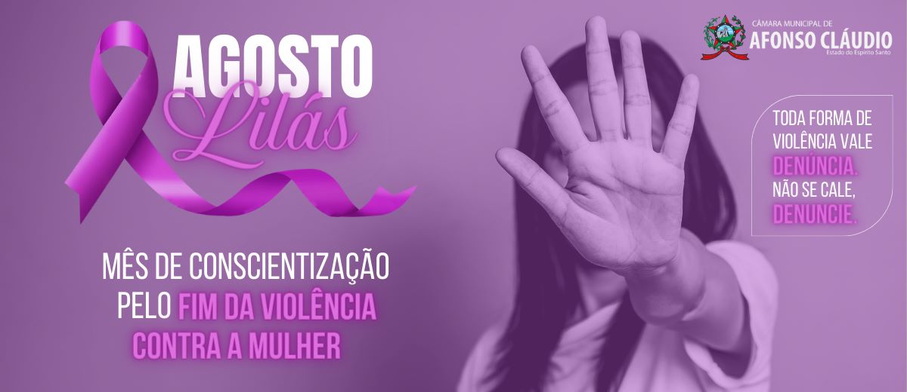

A violência contra a mulher é definida como qualquer ato ou conduta baseada no gênero que cause morte, dano ou sofrimento físico, sexual ou psicológico à mulher, tanto na esfera pública quanto na privada. Essa violência pode se manifestar de diversas formas, incluindo violência física, psicológica, sexual, moral e patrimonial.
A Lei Maria da Penha reconhece cinco tipos de violência doméstica e familiar contra mulher podem ser fisicas,psicológica e sexual.
A violência contra a mulher é qualquer ação ou omissão baseada no gênero que cause dano ou sofrimento físico, sexual ou psicológico, dano moral ou patrimonial. É um problema social grave, com raízes culturais e estruturais que afeta mulheres de todas as classes sociais e regiões.
Disque 180 - Central de Atendimento a Mulher. Funciona 24 horas, e gratuito e anonimo.
Campanha do Agosto Lilas